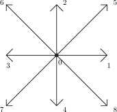

Part I · Foundations of the Lattice Boltzmann Method — Chapter 3
Construction of the Models
The construction of a lattice Boltzmann model is conditioned by the choice of a type of lattice, then by the determination of the linearized collision matrix \(\Omega\), and finally by finding the equilibrium values that will allow the model to simulate the desired macroscopic equations. It is this succession of steps that we shall present in this chapter starting from a simple example, built on a two-dimensional square lattice.
3.1 Chapman-Enskog expansion
Consider the evolution rule of our gas in the form \[N_i(\vec{r}+\vec{c}_i,t+1)=N_i(\vec{r},t)-\sum_{j=0}^{b}{\Omega_{ij}\,\left( N_j-N_j^{(0)}\right)}\] where \(N^{(0)}\) denotes an equilibrium quantity. The time and space increments being both of the same order, we shall no longer distinguish them in what follows. A simple Taylor expansion to second order in time and/or space, in which we intentionally omit to write the higher order contributions, yields: \[\begin{equation} \label{componant} \partial_tN_i\,+\,c_{i\alpha} \partial_\alpha N_i\,+\,c_{i\alpha} \,\partial_\alpha\partial_tN_i\,+\,{1 \over 2} \left( \partial_t^2 N_i\,+\,c_{i\alpha}c_{i\beta}\,\partial_{\alpha\beta}^2 N_i \right)= -\Omega_{ij}\,\left( N_j-N_j^{(0)}\right). \end{equation}\] This last equation can be expressed in matrix notation, and with \(\displaystyle({\mathbf{S}}_{\alpha})_{ij}=\delta_{ij} c_{i\alpha}\), where we adopt the implicit summation convention only over repeated Greek indices in the remainder of this study. Equation (3.1) becomes: \[\begin{equation} \partial_t{\mathbf{N}}\,+\,{\mathbf{S}}_{\alpha} \partial_\alpha{\mathbf{N}}\,+\,{\mathbf{S}}_{\alpha} \,\partial_\alpha\partial_t{\mathbf{N}} \,+\,{1 \over 2} \left( \partial_t^2 {\mathbf{N}}\,+\,{\mathbf{S}}_{\alpha}{\mathbf{S}}_{\beta}\,\partial_{\alpha\beta}^2 {\mathbf{N}}\right)= -\Omega\,\left( {\mathbf{N}}-{\mathbf{N}}^{(0)}\right) \label{vector} \end{equation}\] Using the following expression for \({\mathbf{N}}\) and for the derivatives, \[\begin{equation} \left\{ \begin{array}{l} {\mathbf{N}}={\mathbf{N}}^{(0)}+\epsilon\,{\mathbf{N}}^{(1)}+\epsilon^2\,{\mathbf{N}}^{(2)}, \\ \partial_t=\epsilon\,\partial_{t_1}+\epsilon^2\,\partial_{t_2},\\ \partial_\alpha=\epsilon\,\partial_{\alpha '}, \end{array} \right. \end{equation}\] where we introduce two time scales and one space scale together with a small parameter \(\epsilon\). The expansion thus defined is called the Chapman-Enskog expansion. Substituting these definitions into equation (3.2), and collecting the first-order terms in \(\epsilon\), we obtain: \[\begin{equation} \partial_{t_1}{\mathbf{N}}^{(0)}+{\mathbf{S}}_{\alpha}\partial_{\alpha '}{\mathbf{N}}^{(0)}=-\Omega\, {\mathbf{N}}^{(1)} \label{firstorder} \end{equation}\] The second order is of course given by collecting the second-order terms in \(\epsilon\), and yields: \[\partial_{t_2}{\mathbf{N}}^{(0)}+\partial_{t_1}{\mathbf{N}}^{(1)}+{\mathbf{S}}_{\alpha} \partial_{\alpha '}{\mathbf{N}}^{(1)}+{1\over 2}(\partial_{t^2_1}{\mathbf{N}}^{(0)} +2\,{\mathbf{S}}_{\alpha}\partial_{t_1 \alpha '}{\mathbf{N}}^{(0)}+{\mathbf{S}}_{\alpha}{\mathbf{S}}_{\beta} \,\partial_{\alpha ' \beta '}{\mathbf{N}}^{(0)})=-\Omega\,{\mathbf{N}}^{(2)},\] we can now use equation (3.4) and obtain: \[\begin{equation} \partial_{t_2}{\mathbf{N}}^{(0)}+({\mathbf{\mathcal{I}}}-{\Omega \over 2})\partial_{t_1}{\mathbf{N}}^{(1)} +{\mathbf{S}}_{\alpha}({\mathbf{\mathcal{I}}}-{\Omega \over 2})\partial_{\alpha '}{\mathbf{N}}^{(1)}=- \Omega\,{\mathbf{N}}^{(2)}. \label{secondorder} \end{equation}\]
3.2 Two-dimensional model
In the following, and as a simple example, we shall use a two-dimensional square lattice which we shall call D2C1.2. This lattice corresponds to the D2Q9 lattice in the notation used in [35] and is shown in figure (3.1).

3.2.1 Eigenvectors and definitions
We must first construct the collision matrix. The only constraints we have on this choice are that the collision matrix must conserve mass and momentum. This implies that the vectors of the type \((1,\dots,1)\) and \((c_{0\,\alpha},\dots,c_{i\,\alpha},\dots)\) will be eigenvectors associated with the zero eigenvalue. The other vectors are simply chosen to be pairwise orthogonal. These eigenvectors necessarily have as generators powers and compositions of the vectors \(c_{i\alpha}\), such as (\(c_{i\alpha}\,c_{i\beta}\,c_{i\gamma}\dots\)) for example. A simplification can be observed if one chooses \(Q_{i\alpha\beta}=c_{i\alpha}c_{i\beta}-{c_i^2/2}\,\delta_{\alpha\beta}\) as eigenvectors. Indeed, these vectors enter directly into the expression of the viscous stress tensor and are mutually orthogonal or parallel. One can also have an energy-type eigenvector, \(e_i\sim c_i^2/2\), with \(c_i^2=c_{ix}^2+c_{iy}^2\). We have thus chosen the following set of vectors constituting an orthogonal basis of the nine-dimensional space: \[\begin{equation} \label{vectorlist} \begin{array}{lll} {\mathbf{1}}&=&\left\{ c_i^0 \right\}\\ {\mathbf{E}}&=&\left\{ 4 c_i^0-3 c_i^2 \right\}\\ {\mathbf{C}}_x&=&\left\{ c_{ix} \right\}\\ {\mathbf{C}}_y&=&\left\{ c_{iy} \right\}\\ {\mathbf{T}}_{xxy}&=&\left\{ 2 c_{ix}^3-3 c_{iy}^2\,c_{ix} \right\}\\ {\mathbf{T}}_{yyx}&=&\left\{ 2 c_{iy}^3-3 c_{ix}^2\,c_{iy} \right\}\\ {\mathbf{Q}}_{xx}&=&\displaystyle\left\{ c_{ix}^2-{c_i^2\over 2} \right\}\\ {\mathbf{Q}}_{xy}&=&\left\{ c_{ix}c_{iy} \right\}\\ {\mathbf{H}}&=&\left\{ 9 c_{ix}^2\,c_{iy}^2-6 c_i^2+4 c_i^0 \right\}\\ \end{array} \end{equation}\]
By normalizing these vectors, one finds: \[\begin{eqnarray} {\mathbf{e}}_{0} &=&\left(\phantom{-}1,\phantom{-}1,\phantom{-}1,\phantom{-}1,\phantom{-}1,\phantom{-}1,\phantom{-}1,\phantom{-}1,\phantom{-}1\phantom{-}\right)/3 \nonumber\\ {\mathbf{e}}_{1} &=&\left(\phantom{-}4,\phantom{-}1,\phantom{-}1,\phantom{-}1,\phantom{-}1,-2,-2,-2,-2\phantom{-}\right)/6 \nonumber\\ {\mathbf{e}}_{2} &=&\left(\phantom{-}0,\phantom{-}1,\phantom{-}0,-1,\phantom{-}0,\phantom{-}1,-1,-1,\phantom{-}1\phantom{-}\right)/\sqrt{6} \nonumber\\ {\mathbf{e}}_{3} &=&\left(\phantom{-}0,\phantom{-}0,\phantom{-}1,\phantom{-}0,-1,\phantom{-}1,\phantom{-}1,-1,-1\phantom{-}\right)/\sqrt{6} \nonumber\\ {\mathbf{e}}_{4} &=&\left(\phantom{-}0,\phantom{-}2,\phantom{-}0,-2,\phantom{-}0,-1,\phantom{-}1,\phantom{-}1,-1\phantom{-}\right)/2\sqrt{3} \\ {\mathbf{e}}_{5} &=&\left(\phantom{-}0,\phantom{-}0,\phantom{-}2,\phantom{-}0,-2,-1,-1,\phantom{-}1,\phantom{-}1\phantom{-}\right)/2\sqrt{3} \nonumber\\ {\mathbf{e}}_{6} &=&\left(\phantom{-}0,\phantom{-}1,-1,\phantom{-}1,-1,\phantom{-}0,\phantom{-}0,\phantom{-}0,\phantom{-}0\phantom{-}\right)/2 \nonumber\\ {\mathbf{e}}_{7} &=&\left(\phantom{-}0,\phantom{-}0,\phantom{-}0,\phantom{-}0,\phantom{-}0,\phantom{-}1,-1,\phantom{-}1,-1\phantom{-}\right)/2 \nonumber\\ {\mathbf{e}}_{8} &=&\left(\phantom{-}4,-2,-2,-2,-2,\phantom{-}1,\phantom{-}1,\phantom{-}1,\phantom{-}1\phantom{-}\right)/6 \nonumber \end{eqnarray}\] associated with the eigenvalues that we choose to be\[\displaystyle\left(\phantom{-}0,\phantom{-}\lambda_e,\phantom{-}0,\phantom{-}0,\phantom{-}\lambda_\chi,\phantom{-}\lambda_\chi ,\phantom{-}\lambda_\nu,\phantom{-}\lambda'_\nu,\phantom{-}\lambda_\sigma\right).\] where some eigenvalues are repeated for symmetry reasons.
3.2.2 Second-order expansion
We can express relations (3.4) and (3.5) in the eigenvector basis of \(\Omega\); this will allow us to greatly simplify the expressions to be manipulated. Thus, setting that the variables topped with a hat are expressed in the new basis, we have: \[\begin{equation} \partial_{t_1}{\widehat{\mathbf{N}}}^{(0)}+\widehat{{\mathcal{S}}}_\alpha\partial_{\alpha '}{\widehat{\mathbf{N}}}^{(0)}=-{\widehat \Omega}\, {\widehat{\mathbf{N}}}^{(1)} \label{firstorderc} \end{equation}\] \[\begin{equation} \partial_{t_2}{\widehat{\mathbf{N}}}^{(0)}+({\mathbf{\mathcal{I}}}-{{\widehat \Omega}\over 2})\partial_{t_1}{\widehat{\mathbf{N}}}^{(1)} +\widehat{{\mathcal{S}}}_\alpha({\mathbf{\mathcal{I}}}-{{\widehat \Omega}\over 2})\partial_{\alpha '}{\widehat{\mathbf{N}}}^{(1)}=- {\widehat \Omega}\,{\widehat{\mathbf{N}}}^{(2)} \label{secondorderc} \end{equation}\]
We shall now attempt to recover the macroscopic equations; the continuity equation, the Stokes or Navier-Stokes equations, from relations (3.8) and (3.9). For this, it will be useful to set: \[\begin{eqnarray} \rho=3\phantom{+}\widehat{N}_{0}\,,\quad&\phantom{+}\widehat{N}_{1}=2\rho/3-e\,,&\quad j_x=\sqrt{6}\phantom{+}\widehat{N}_{2}\nonumber\\ j_y=\sqrt{6}\phantom{+}\widehat{N}_{3}\,,\quad&q_x=2\sqrt{3}\phantom{+}\widehat{N}_{4}\,,&\quad q_y=2\sqrt{3}\phantom{+}\widehat{N}_{5}\\ S_{xx}=\phantom{+}\widehat{N}_{6}\,,\quad&S_{xy}=2\phantom{+}\widehat{N}_{7}\,,&\quad\sigma=\phantom{+}\widehat{N}_{8}\nonumber \end{eqnarray}\]
The population vector can also be written as: \[\begin{equation} \label{vecpopulation} {\mathbf{N}}={\rho \over 9}{\mathbf{1}}+\frac{1}{36}({2\rho \over 3}-e)\, {\mathbf{E}}+{j_x\over 6}{\mathbf{C}}_x+{j_y\over 6}{\mathbf{C}}_y+S_{xx}{\mathbf{Q}}_{xx}+{S_{xy}\over 4} {\mathbf{Q}}_{xy}+{q_x\over 12}{\mathbf{T}}_{xxy}+{q_y\over 12}{\mathbf{T}}_{yyx}+{\sigma\over 6}\, {\mathbf{H}}. \end{equation}\]
The dynamical equations of the system are written by “unrolling” the system consisting of equations (3.8) and (3.9). By taking the nine first-order equations and the three second-order equations we can form a closed system. Indeed, only the first three second-order equations are needed to close the system and determine the equilibrium quantities without bringing in new quantities such as the second-order corrections to equilibrium (\(\zeta^{(2)}\)).
We thus have for the first order: \[\begin{eqnarray} &&\hspace{-0.5in}\partial_{t_1}\rho+\partial_{x'}j_x+\partial_{y'}j_y=0\\ &&\hspace{-0.5in}\partial_{t_1}e^{(0)}+\frac{1}{6}\left(\partial_{x'}\left(5j_x-q^{(0)}_x\right) +\partial_{y'}\left(5j_y-q^{(0)}_y\right)\right)=-\lambda_ee^{(1)}\\ &&\hspace{-0.5in}\partial_{t_1}j_x+\partial_{x'}e^{(0)}+\partial_{x'}S^{(0)}_{xx}+\partial_{y'}S^{(0)}_{xy}=0\\ &&\hspace{-0.5in}\partial_{t_1}j_y+\partial_{y'}e^{(0)}+\partial_{x'}S^{(0)}_{xy}-\partial_{y'}S^{(0)}_{xx}=0\\ &&\hspace{-0.5in}\partial_{t_1}q^{(0)}_x+\frac{2}{3}\partial_{x'}(2\rho-3e^{(0)})+2\partial_{x'}S^{(0)}_{xx}-2\partial_{x'}\sigma^{(0)} -\partial_{y'}S^{(0)}_{xy}=-\lambda_\chi q^{(1)}_x\\ &&\hspace{-0.5in}\partial_{t_1}q^{(0)}_y-\partial_{x'}S^{(0)}_{xy}+\frac{2}{3}\partial_{y'}(2\rho-3e^{(0)}) -2\partial_{y'}S^{(0)}_{xx}-2\partial_{y'}\sigma^{(0)}=-\lambda_\chi q^{(1)}_y\\ \label{sxx}&&\hspace{-0.5in}\partial_{t_1}S^{(0)}_{xx}+\frac{1}{6}\left(\partial_{x'}(j_x+q^{(0)}_x) -\partial_{y'}(j_y+q^{(0)}_y)\right) =-\lambda_\nu S^{(1)}_{xx}\\ \label{sxy}&&\hspace{-0.5in}\partial_{t_1}S^{(0)}_{xy}+\frac{1}{3}\left(\partial_{x'}(2j_y-q^{(0)}_y) +\partial_{y'}(2j_x-q^{(0)}_x)\right) =-\lambda'_\nu S^{(1)}_{xy}\\ &&\hspace{-0.5in}\partial_{t_1}\sigma^{(0)}-\frac{1}{6}\left(\partial_{x'}q^{(0)}_x+\partial_{y'}q^{(0)}_y\right) =-\lambda_\sigma\sigma^{(1)} \end{eqnarray}\] and the second order gives \[\begin{eqnarray} &&\hspace{-0.5in}\partial_{t_2}\rho=0\\ &&\hspace{-0.5in}\partial_{t_2}j_x+\left(1-\frac{\lambda_\nu}{2}\right)\partial_{x'}S^{(1)}_{xx} +\left(1-\frac{\lambda'_\nu}{2}\right)\partial_{y'}S^{(1)}_{xy} +\left(1-\frac{\lambda_e}{2}\right)\partial_{x'}e^{(1)}=0\\ &&\hspace{-0.5in}\partial_{t_2}j_y+\left(1-\frac{\lambda'_\nu}{2}\right)\partial_{x'}S^{(1)}_{xy} -\left(1-\frac{\lambda_\nu}{2}\right)\partial_{y'}S^{(1)}_{xx} +\left(1-\frac{\lambda_e}{2}\right)\partial_{y'}e^{(1)}=0 \end{eqnarray}\]
The dynamical equations are then obtained by collecting the first- and second-order equations. \[\begin{eqnarray} \label{conta} &&\hspace{-2.5em}\partial_t\rho+\partial_xj_x+\partial_yj_y=0\\ &&\hspace{-2.5em}\partial_tj_x+\partial_xe^{(0)}+\partial_xS^{(0)}_{xx}+\partial_yS^{(0)}_{xy}=\nonumber\\ &&\hspace{-1em} \phantom{+}\frac{1}{6}\left(\frac{1}{\lambda_\nu}-\frac{1}{2}\right) \partial_x\left(6\partial_tS^{(0)}_{xx}+\partial_x(j_x+q^{(0)}_x)-\partial_y(j_y+q^{(0)}_y)\right)\nonumber\\ &&\hspace{-1.4em} +\frac{1}{3}\left(\frac{1}{\lambda'_\nu}-\frac{1}{2}\right) \partial_y\left(3\partial_tS^{(0)}_{xy}+\partial_x(2j_y-q^{(0)}_y)+\partial_y(2j_x-q^{(0)}_x)\right)\nonumber\\ \label{NSxa} &&\hspace{-1.4em} +\frac{1}{6}\left(\frac{1}{\lambda_e}-\frac{1}{2}\right) \partial_x\left(6\partial_te^{(0)}+\partial_x(5j_x-q^{(0)}_x)+\partial_y(5j_y-q^{(0)}_y)\right)\\ &&\hspace{-2.5em}\partial_tj_y+\partial_ye^{(0)}+\partial_xS^{(0)}_{xy}-\partial_yS^{(0)}_{xx}=\nonumber\\ &&\hspace{-1em} \phantom{-}\frac{1}{3}\left(\frac{1}{\lambda'_\nu}-\frac{1}{2}\right) \partial_x\left(3\partial_tS^{(0)}_{xy}+\partial_x(2j_y-q^{(0)}_y)+\partial_y(2j_x-q^{(0)}_x)\right)\nonumber\\ &&\hspace{-1.4em} -\frac{1}{6}\left(\frac{1}{\lambda_\nu}-\frac{1}{2}\right) \partial_y\left(6\partial_tS^{(0)}_{xx}+\partial_x(j_x+q^{(0)}_x)-\partial_y(j_y+q^{(0)}_y)\right)\nonumber\\ \label{NSya} &&\hspace{-1.4em} +\frac{1}{6}\left(\frac{1}{\lambda_e}-\frac{1}{2}\right) \partial_y\left(6\partial_te^{(0)}+\partial_x(5j_x-q^{(0)}_x)+\partial_y(5j_y-q^{(0)}_y)\right) \end{eqnarray}\]
3.2.3 Equilibrium quantities
To recover the Navier-Stokes or Stokes equations, in the weakly compressible limit, we must specify the equilibrium values of the quantities we have just introduced. One thus finds that \(S^{(0)}_{xx}\) and \(S^{(0)}_{xy}\) must be given by \[\begin{equation} S^{(0)}_{xx}=\frac{g}{2\rho}\left(j_x^2-j_y^2\right)\,,\quad{\mathrm{and}}\quad S^{(0)}_{xy}=\frac{g}{\rho}j_xj_y. \end{equation}\] We shall take \(g=1\) to recover the Navier-Stokes equations and \(g=0\) for the Stokes equations. We can then neglect terms of the type \(\partial_\alpha\partial_{t1}\,S^{(0)}_{xx}\) and \(\partial_\alpha\partial_{t1}\,S^{(0)}_{xy}\) because they are of order \(\epsilon^2 u^2\).
For simplicity in writing the kinematic viscosity, \(\nu\), and the bulk viscosity, \(\xi\), it is convenient to choose: \[\begin{equation} \lambda_\nu=\lambda_\nu', \end{equation}\] which leads us to take: \[\begin{equation} q^{(0)}_x=j_x\,,\quad{\mathrm{and}}\quad q^{(0)}_y=j_y, \end{equation}\] because we must have: \[\begin{equation} {1+q\over 6}\left({1\over\lambda_\nu}-\frac{1}{2} \right)={2-q\over 6}\left( {1\over\lambda'_\nu}-\frac{1}{2} \right), \end{equation}\] when \[\begin{equation} q^{(0)}_x=q\,j_x\,,\quad{\mathrm{and}}\quad q^{(0)}_y=q\,j_y. \end{equation}\]
A simplifying choice also dictates that we take: \[\begin{equation} \sigma^{(0)}=\rho\,({4-9\,c_s^2 \over 6})-{\alpha \over 2 \rho}{\mathbf{j}}^2 \end{equation}\]
One then recovers the Navier-Stokes equations in the weakly compressible limit: \[\begin{eqnarray} \label{NStokes} &&\partial_t\rho+{\mathbf{\nabla}} . \,{\mathbf{j}}=0\\ &&\partial_t\,{\mathbf{j}} + {\mathbf{\nabla}} . ({{\mathbf{j}}:{\mathbf{j}}\over \rho})=-{\mathbf{\nabla}} P + {\mathbf{\nabla}}.(\nu\,{\mathbf{\nabla}} {\mathbf{j}})+{\mathbf{\nabla}}(\xi\,{\mathbf{\nabla}}.\,{\mathbf{j}}). \end{eqnarray}\] We have chosen to give our fluid the equation of state \(P=c_s^2\, \rho\). Now, the expansion gives us \(\displaystyle P=e^{(0)}-j^2/2\rho\) as the definition of pressure; this imposes the equilibrium value of the energy mode \(e^{(0)}=c_s^2\,\rho+j^2/2\rho\) to eliminate the appearance of a term in velocity squared.
We have thus corrected several problems appearing in the lattice Boltzmann models of the previous generation which were, first, the dependence of the pressure on the square of the velocity through \((j^2)\); then, Galilean invariance is now ensured by the choice \(g=1\), and the square of the speed of sound, \(c_s^2\), is no longer fixed to \(1/3\) or \(1/2\) but has become a free parameter of the model.
Moreover, we obtain \(\displaystyle\nu={1 \over 3}({1 \over \lambda_\nu} -{1 \over 2})\) for the kinematic viscosity, and \(\displaystyle\xi=({2 \over 3}-c_s^2)({1 \over \lambda_e}-{1 \over 2})\) for the bulk viscosity.
By substituting these definitions back into the original basis, the population basis, one recovers for the equilibrium quantities: \[\displaystyle N_0={ 3 -5\,c_s^2 \over 3}\left( \rho-{2 \over (3-5 \,c_s^2)\,\rho} (j_x^2+j_y^2)\right)\] \[\displaystyle N_i=t_p \left( \rho +{j_\alpha c_{i\alpha} \over c_s^2}+{j_\alpha\,j_\beta \over 2\, \rho\,c_s^2}(3 \,c_{i\alpha}\,c_{i\beta} - \delta_{\alpha \beta})\right)\] where the index \(p\) denotes the square of the speed magnitude of direction \(i\), and with \(\displaystyle t_1={c_s^2 \over 3}\) and \(\displaystyle t_2={c_s^2 \over 12}\). One recovers the distributions given for the B.G.K. model [35] when one chooses the free parameters \(c_s^2=1/3\) and \(\alpha=1\) as well as the eigenvalues all equal to each other.
The collision matrix in the population basis is then constructed as follows:
let \({\mathcal{T}}\) be the matrix whose rows are the eigenvectors of \(\Omega\), and \[\displaystyle{\widehat \Omega}=\mbox{diag}\left(\phantom{-}0,\phantom{-}\lambda_e,\phantom{-}0,\phantom{-}0,\phantom{-}\lambda_\chi,\phantom{-}\lambda_\chi ,\phantom{-}\lambda_\nu,\phantom{-}\lambda_\nu,\phantom{-}\lambda_\sigma\right)\] the diagonal collision matrix in the new basis. The collision matrix \(\Omega\) is then given by: \[\Omega={\mathcal{T}}^{-1}\,{\widehat \Omega}\,{\mathcal{T}}.\]
One can of course construct variants derived from this model by conserving, for instance, the energy [21] or other quantities, as will be seen later.
References cited in this chapter
- [21] D. d’Humières, “Generalized Lattice-Boltzmann Equations”, AIAA Rarefied Gas Dynamics: theory and applications, Vol. 159 of Progress in Astronautics and Aeronautics (1992) pp. 450–458. ↗
- [35] Y.H. Qian, D. d’Humières,and P. Lallemand, “Lattice BGK Models for Navier-Stokes Equation,” Europhysics Letters, Vol. 17(6), 1992, pp. 479–484. ↗